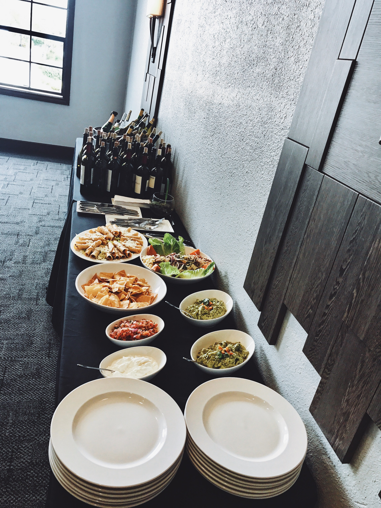
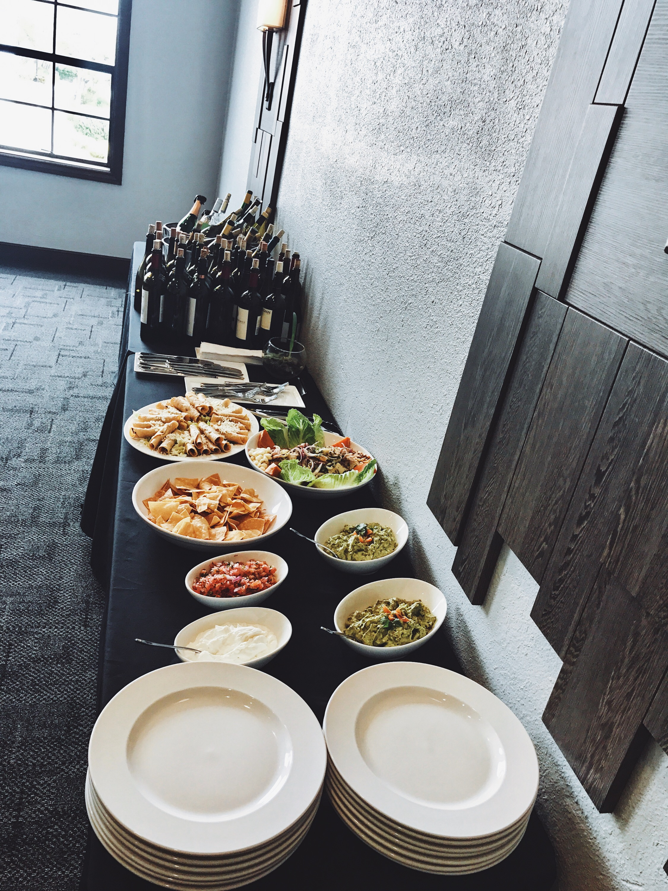
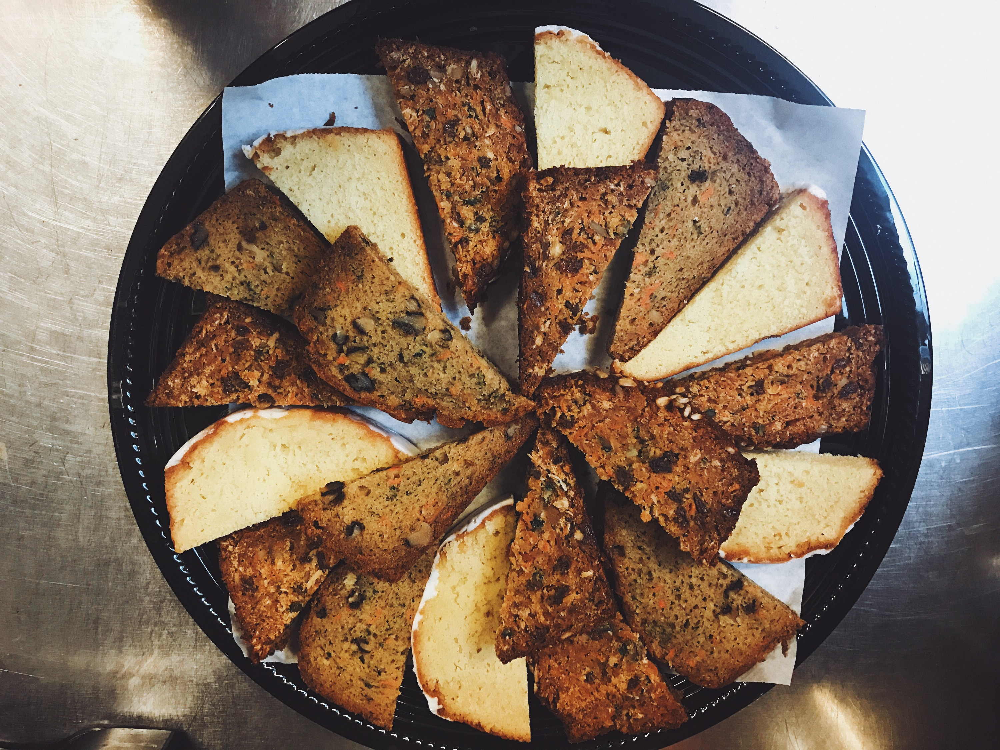
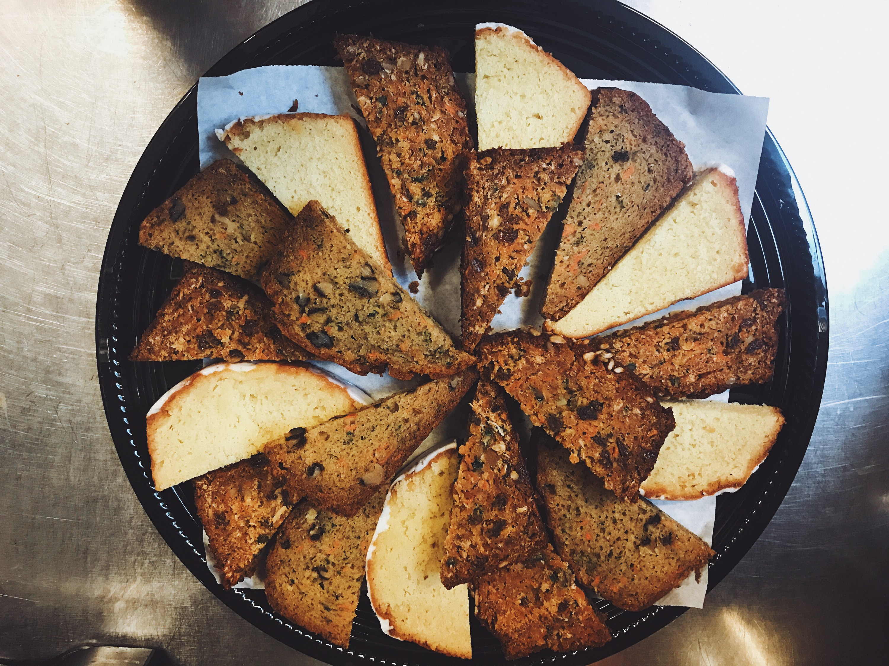

Antigua Coffee
CATERING
We have a variety of catering options available for parties ranging from 25 to 250 people. Whether you’re setting up a breakfast meeting, a lunchtime conference, or a mixer, we can have your event stocked, and ready to go. Lets figure out the details together. Shoot over an email to antiguassf@gmail.com, or give us a call at 650-741-6261.
EVENTS
 

 

COFFEE CARTS
Oh, one more thing. We also have these custom-built coffee carts available for rental. They come fully stocked with coffee, and we can also provide a Barista should your event require more complex drinks such as our “Mexican Mocha.”